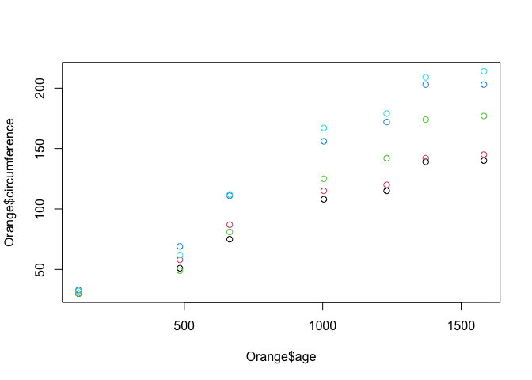
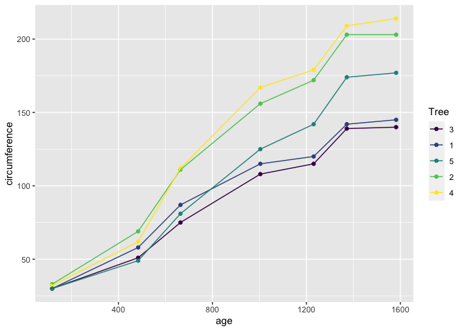
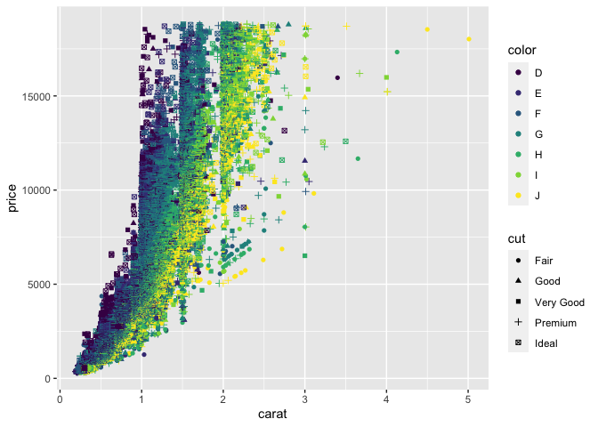

R is a programming language for statistical computing. It currently ranks as the 12th most popular language in use today.
R's focus is on statistics, data manipulation and visualization. It has a flourishing, friendly community supporting it with thousands of open-source add-ons (‘packages') with a particular lean towards data science and analytics.
R is free, and available from the Comprehensive R Archive Network (CRAN). This article will use R version 4.1.
For developing code and managing your data science projects, I highly recommend the open source RStudio which provides an excellent integrated development environment (IDE).
If you'd like to avoid all the bother of installing R and RStudio, you can try them both out for free on the web using RStudio CLoud, where you can program right inside your browser.
Within R Studio, you are provided with a console where you can type R commands directly and then immediately see the results.
Within this console, try typing a simple sum as observe the results like so,
1+2
[1] 3
Notice R prints the correct answer 3 to the console, with a bracketed element number [1].
In R, all results are returned as vectors, which can contain multiple values. You can combine multiple values into a longer vector using the c() function,
c(1,2,3)
[1] 1 2 3
Assignment
To store a vector inside of a named variable, R uses the <- operator. For example, to store the character vector "Hello, World!" in a variable called welcome, you would type this,
welcome <- "Hello, World!"
To see the values stored in your welcome variable, you can use the print() function.
print(welcome)
[1] "Hello, World!"
Element Addresses
When storing multiple values in a vector, you may wish to subset that vector and access single or a subset of elements within it.
Lets set up a character vector called fruit
fruit <- c("Apple", "Pear", "Orange")
print(fruit)
[1] "Apple" "Pear" "Orange"
To access elements within the vector, we use the [_index] operator. In R, unlike in python, the index of the vector starts at 1 (Python starts at 0). So to access the second element you would type,
fruit[2]
[1] "Pear"
Data Frames
So far, we have just dealt with 1-dimensional vectors, but in data science we most often deal with tabulated data (like a spreadsheet) with rows and columns.
The data.frame object is the best way to create or store such tabular data. Lets create a few more variables and also a fruit_shop data frame.
fruit_colour <- c("Green", "Green", "Orange")
fruit_price <- c(0.30, 0.50, 0.75)
fruit_shop <-
data.frame(
fruit_type = fruit,
fruit_colour = fruit_colour,
fruit_price = fruit_price
)
print(fruit_shop)
fruit_type fruit_colour fruit_price
1 Apple Green 0.30
2 Pear Green 0.50
3 Orange Orange 0.75
Notice R ignores white space so you're free to break up code into multiple lines to help readability.
To access individual elements of a 2D object such as a data.frame, you can use the same operator [] specifying the rows and columns [row, column]
fruit_shop[1,3]
[1] 0.3
To choose a single column but all the rows, just omit the index for the row,
fruit_shop[,2]
[1] "Green" "Green" "Orange"
For a range of values, you can use the shorthand n:m which produces a vector of integers from n to m inclusive,
fruit_shop[1:2,] # First two rows, all columns
fruit_type fruit_colour fruit_price
1 Apple Green 0.3
2 Pear Green 0.5
Base Plotting
R's inbuilt plot() function can create visualizations of your data. It's pretty good, but you should be aware there are some far more powerful graphing options available via packages that we'll cover later.
Lets plot a data frame. R has some in-built data sets that are really useful for quick experiments. Lets try plotting one of these in-built data frames, the Orange data set. This data set contains observations of several Orange trees over time, and their trunk circumference. We can take a look by printing the Orange data set to the console.
Orange
Tree age circumference
1 1 118 30
2 1 484 58
3 1 664 87
4 1 1004 115
5 1 1231 120
6 1 1372 142
7 1 1582 145
8 2 118 33
9 2 484 69
10 2 664 111
11 2 1004 156
12 2 1231 172
13 2 1372 203
14 2 1582 203
15 3 118 30
16 3 484 51
17 3 664 75
18 3 1004 108
19 3 1231 115
20 3 1372 139
21 3 1582 140
22 4 118 32
23 4 484 62
24 4 664 112
25 4 1004 167
26 4 1231 179
27 4 1372 209
28 4 1582 214
29 5 118 30
30 5 484 49
31 5 664 81
32 5 1004 125
33 5 1231 142
34 5 1372 174
35 5 1582 177
We see this data frame has three columns, a Tree id that identifies which tree, the age of the tree (in days), and the tree's circumfrance. Tosee information on the data set, or indeed any function, you can quickly bring up the help by typing ?Orange.
Lets plot this data frame so see the relationship between age and circumfrance. For this we'll select column 2 for the x-axis and column 3 for the y axis.
plot(Orange[,2], Orange[,3])
 Not a bad start, but we can do better. Firstly, lets make our code more readable by using a different way of selecting columns.
Not a bad start, but we can do better. Firstly, lets make our code more readable by using a different way of selecting columns.
For data frames, we can use the $ operator to refer to a column by it's name, rather than it's index.
plot(Orange$age, Orange$circumference)
Ok, not much change to the graph, except the axis labels are a little more helpful. Now, lets colour the points by the tree which the observation came from. We do this by passing the col = parameter to the plot() function.
plot(Orange$age, Orange$circumference, col = Orange$Tree)

There are lots of other base plotting functions in R, such as barplot(), boxplot() and hist(). However, the majority of data scientists forego the base plotting in favor of an open source alternative called ‘ggplot'.
ggplot
The ggplot package stands for the grammar of graphics plots. It's design is based on a book by Leland Wilkinson called, unsurprisingly, The Grammar of Graphics. It was created by Hadley Wickham, who is now the chief data scientist as RStudio, and is one of the R community's most prolific contributors.
To use a package, we must first install it. To install packages into R, you use the install_packages() function.
install.packages("ggplot2")
We then need to load a package into our R session, which we do like so,
library(ggplot2)
Lets explore how ggplot works. The philosophy of ggplot is that a plot is made of elements that should be separately controlled. We have things like the scales on the axis, the geometries we use to represent the data (such as points for scatter plots, lines for trends or bars for barcharts),
Lets start by plotting our Oranges,
library(ggplot2)
ggplot(data = Orange, mapping = aes(x = age, y = circumference, colour = Tree)) +
geom_point() +
geom_line()

Lets break down this bit of code.
- In the first line of this call, the first argument we pass to
ggplot()is always the data, the second argument wrapped in theaes()function are called the aesthetics, which define how the data is mapped to elements of the chart. - We've mapped here the
xvalues toage, theyvalues tocircumference, and thecolourvalues to theTree. (The american spellingcolor=is also acceptable). - In the subsequent lines, we have added using the
+operator different geometries to represent our data, such as points and lines. These points and lines inherit the aesthetics, so they know what x, y, and colour values they should be using to be consistent with the data.
ggplot is far more powerful that base graphics when plotting complex charts thanks to this simple separation between the data and the chart elements.
Lets try a more complex examples using the example data set from ggplot, diamonds.
ggplot(
data = diamonds,
mapping = aes(
x = price,
fill = cut
)
) +
geom_histogram()
`stat_bin()` using `bins = 30`. Pick better value with `binwidth`.

In this example, we mapped the price of a set of diamonds to x, and the fill colour to the quality of the diamond's cut. We then added a histogram geometry to get the resulting histogram plot.
Lets try mapping other aesthetics,
ggplot(
data = diamonds,
mapping = aes(x = carat, y = price, color = color, shape = cut)
) +
geom_point()
Warning: Using shapes for an ordinal variable is not advised

Here we've mapped x, y, shape, colour and the quality of cut to various aesthetics that have then been used in the geom_point() geometry.
Lets just quickly this plot up by adding labels and a theme
ggplot(
data = diamonds,
mapping = aes(x = carat, y = price, color = color, shape = cut)
) +
geom_point() +
labs(
title = "The Diamonds Dataset",
subtitle = "An Example Plot for Intro to R",
) +
theme_light()
Warning: Using shapes for an ordinal variable is not advised